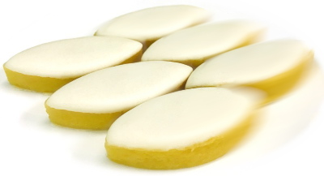

Taille maximale de grille (Speedy) :
Délai d'affichage du score : (s)
coloration des calissons voisins :

cliquez/tapez pour choisir le mode de jeu
(lisez la suite si vous ne savez pas jouer)
Le jeu du calisson est une forme de sudoku, pour lequel il faut :
⇒

⇒
la figure finale est unique car elle doit représenter :
Ces deux interprétations sont utilisables lors de la résolution.
Dans une grande pièce cubique, empilons de petites caisses cubiques en les poussant dans la pièce le plus loin possible, les piles étant de hauteurs croissantes vers les murs du fond.
Exemple d'empilage de caisses dans une pièce de taille 4 :
La figure finale est alors composée des bords de murs de la pièce et des arêtes visibles des petits cubes.
Un calisson est formé de l'assemblage de deux triangles équilatéraux ayant un côté commun. Il en existe trois types avec des orientations distinctes, représentés ici :

Les arêtes à tracer en trait plein délimitent des domaines entièrement remplis de calissons de même couleur :
⇒
Deux règles sont à respecter :
Pour résoudre une grille, il faut :
Les deux règles qui suivent permettent la résolution de toutes les grilles de niveau 1, quelle que soit
leur
taille.
Elles sont cependant insuffisantes pour résoudre celles de niveau 3,
qui sont toutes impossibles à résoudre en n'utilisant que ces deux règles.
Les arêtes initiales ne sont pas modifiables, tandis que les positions des arêtes à déterminer sont tracées en pointillés avec un petit cercle au milieu.
En général, il y a beaucoup moins d'arêtes à tracer que de calissons à colorier.
Afin de faciliter la résolution, le coloriage d'un calisson peut provoquer automatiquement le coloriage des
calissons adjacents qui vérifient la règle de l'angle aigu (ajustable dans les options).
Avec de l'entraînement, on peut souvent se passer du coloriage des calissons !
Solution d'une grille de taille 3 en utilisant les règles de l'angle aigu et du pli, avec dessin de tous les calissons :
Dans ce mode, la durée du jeu n'est pas limitée et il est possible de choisir la taille et le niveau des grilles à résoudre dans une liste déroulante (de la forme taille.difficulté)
Pour chaque grille résolue, le score obtenu est affiché, et une nouvelle grille est proposée.
En cas de changement de niveau, la grille en cours est abandonnée.
Au retour vers la page d'accueil, des statistiques pour la session d'entraînement en cours ainsi que les précédentes sont affichées.
Ce mode vous permet de mettre à l'épreuve votre maîtrise du jeu !
Le but est d'obtenir en un temps limité le score total le plus grand possible, en résolvant des grilles de taille et difficulté croissantes analogues à celle de la page d'entraînement (mais les grilles sont différentes !).
Pour obtenir un score important, il faut :
Le score pour chaque grille augmente avec sa taille et sa difficulté :
Dans les deux modes, trois boutons permettent de modifier le déroulement du jeu :
Pour revenir à l'écran d'accueil depuis les pages de jeu, cliquer sur la maison en haut à gauche

Quand on joue sur ordinateur, il est possible de dessiner des calissons (ou losanges) en effectuant un clic-droit avec la souris sur le milieu d'une arête.
Sur un dispositif à interface tactile où le clic-droit est impossible, les pages de jeu affichent à gauche et à droite de l'hexagone deux boutons définissant le mode d'action d'une pression sur le mileu d'une arête : tracé d'une arête (à gauche) ou d'un losange (à droite). Il suffit de taper sur un bouton pour définir le mode.
Afin de faciliter la résolution, le coloriage d'un calisson peut provoquer automatiquement le coloriage des calissons adjacents qui vérifient la règle de l'angle aigu (voir les options).
La taille de l'écran d'un smartphone étant limitée, il peut être difficile de jouer avec les
grilles de
taille
importante. Pour faciliter le jeu dans ces conditions, il est possible de fixer la taille
maximale des
grilles
qui seront proposées à l'aide de la liste déroulante située sous les boutons de lancement du
jeu.
Le score
obtenu pour chaque grille augmente avec cette taille maximale afin que la durée du jeu reste
sensiblement
constante.
Il est possible de régler la durée pendant laquelle la grille reste affichée (de 0 à 5 secondes) à la fin d'une résolution, afin d'admirer son travail !
Une case à cocher est présente pour activer/désactiver la coloration automatique des calissons voisins selon la règle de l'angle aigu lors de la résolution des grilles par coloriage.
"Speedy Calisson" est inspiré du jeu du Calisson, inventé par Olivier LONGUET. Pour une présentaton, s'informer sur les techniques de résolution et se confronter aux grilles proposées par l'auteur, vous pouvez vous rendre sur le site d'origine.
Le code de la zone de jeu a été modifié à partir du code initial d'Arnaud DURAND.
Tous les contenus mentionnés sont sous licence Creative Commons CC-BY-SA-NC
Le code source de ce programme est disponible sur github à l'adresse suivante :
https://github.com/MartialTarizzo/Calisson-Game
Les grilles proposée dans ce jeu sont créées automatiquement à l'aide d'un programme Python dont le code
est disponible dans un dépôt GitHub
(https://github.com/MartialTarizzo/calisson)
Toutes les grilles proposées ont une unique solution (sinon, c'est une erreur : ne pas hésiter à
m'envoyer un
mail
pour me le signaler).
Les pages HTML de Speedy Calisson peuvent être installées comme une application sur ordinateur, tablette
ou
téléphone.
Il suffit pour cela d'utiliser un navigateur permettant ce type d'installation (Chrome, Edge, Safari,
...) et
ceci
quel que soit le système d'exploitation (Windows, MacOS, Linux, Android, iOS).
En naviguant sur la page d'accueil de Speedy Calisson (celle que vous êtes en train de lire !),
le navigateur vous permet/propose d'installer l'application. Les pages de Speedy Calisson s'ouvriront
alors dans
une fenêtre autonome gérée
par le navigateur (ou en plein écran sur tablette/téléphone) en se comportant comme une application
native.
Dans le cas ou le navigateur que vous utilisez ne permet pas l'installation d'application (par exemple,
Firefox
ne le permet pas
sans l'ajout d'une extension), il est toujours possible de créer un raccourci pour l'inclure dans les
favoris ou
le déposer
sur le bureau.
Quelle que soit la méthode utilisée, en naviguant sur la page d'accueil, l'ensemble des données
nécessaire au
fonctionnement
du jeu est mise en cache par le navigateur pour permettre d'utiliser l'application, même en cas de perte
de
connexion internet
(le jeu continuera de fonctionner même en étant hors connexion).
L'application une fois installée est mise à jour automatiquement à partir du réseau quand une connexion
internet
est active
(c'est une simple mise à jour du cache si besoin)
contact : martial.tarizzo (at) gmail . com
(Version 2.15.7)